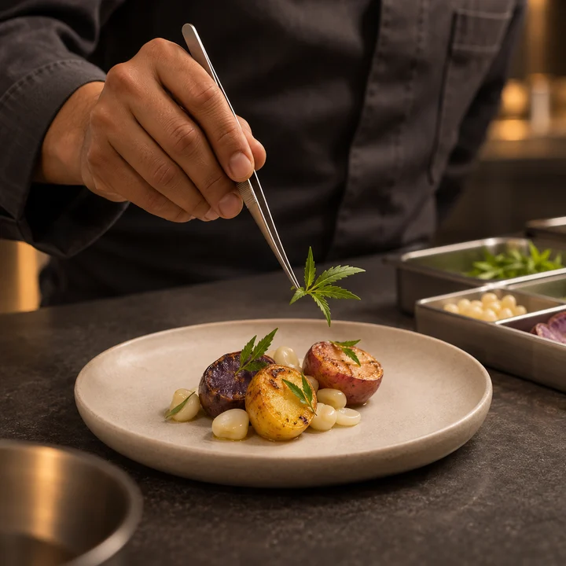
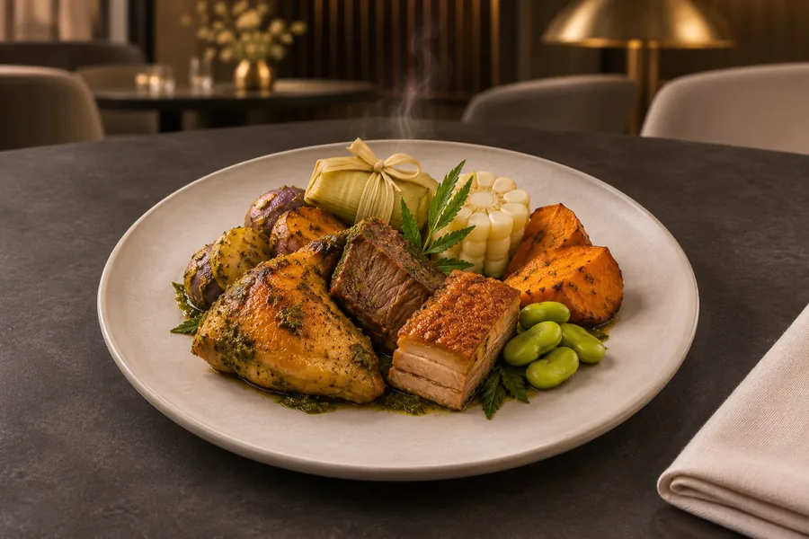
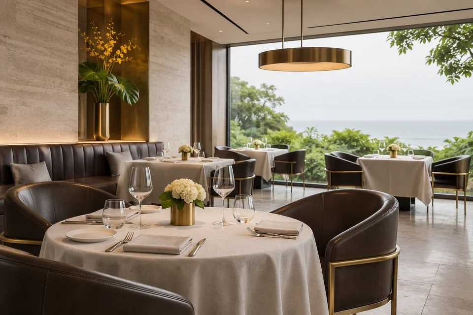
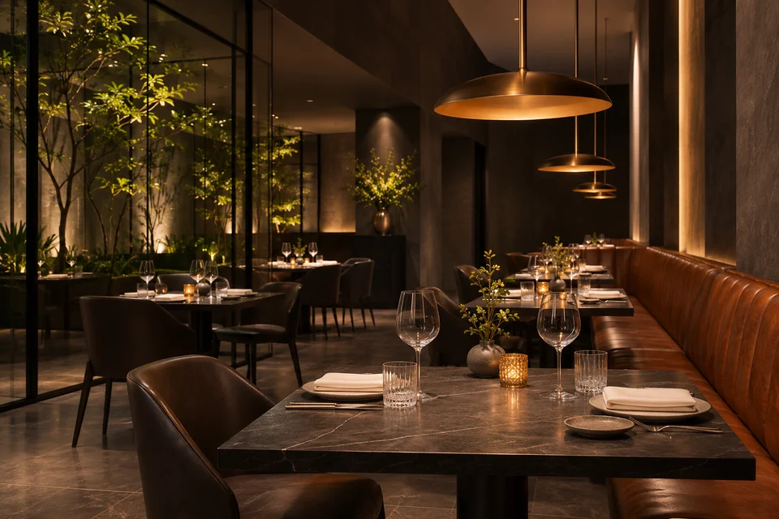

La pachamanca de la casa
Carnes, papas andinas y choclo con el aroma del huacatay.
Cocina peruana
Pachamanca, rocoto relleno y otros clásicos peruanos para compartir.

Carnes, papas andinas y choclo con el aroma del huacatay.

Explora los 60 platos y consulta los precios de Miraflores y San Isidro.
Miraflores
Lima, Perú
Lunes a domingo, en ambas sedes


Información de la demostración. Imágenes ilustrativas.